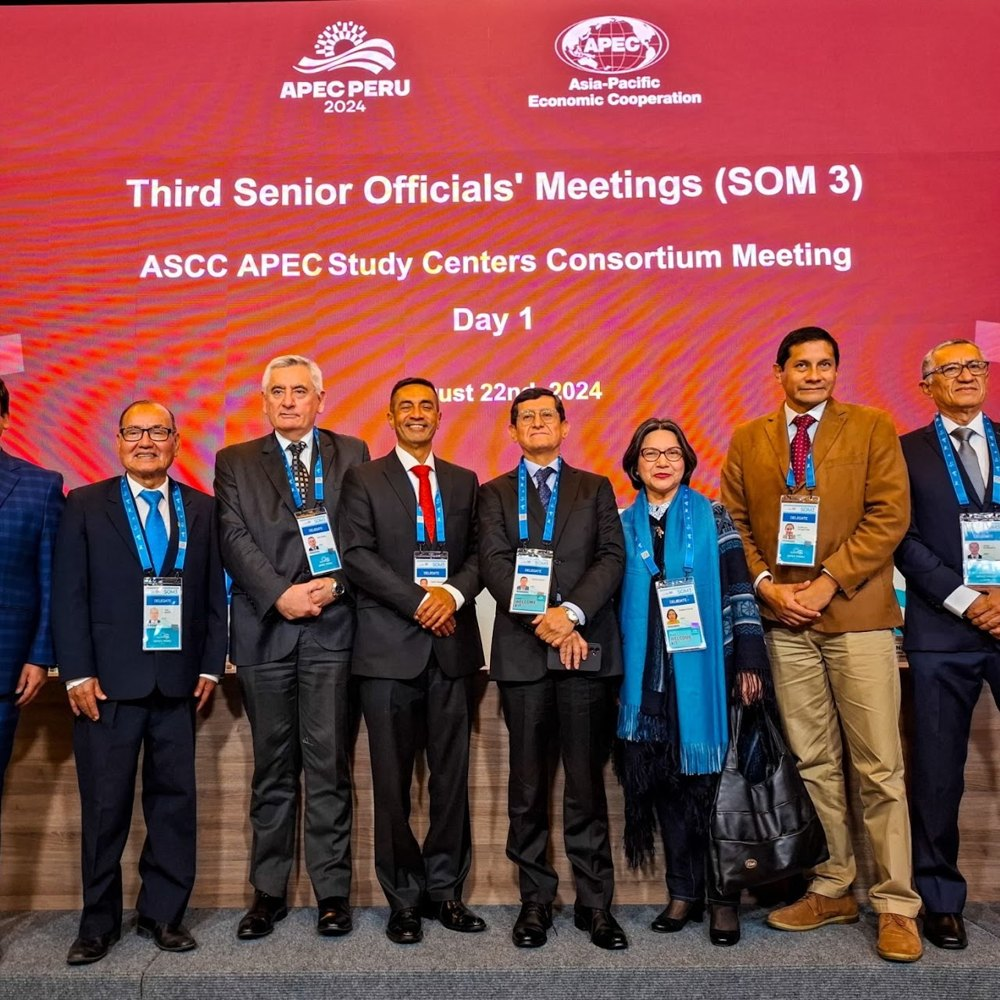

Conferencia de Centros de Estudios APEC 2024
APEC Perú 2024 · Lima

La Conferencia del Consorcio de Centros de Estudios APEC 2024 (APEC Study Centers Consortium Conference, ASCCC 2024) se celebró en Lima, Perú, los días 22 y 23 de agosto de 2024, en el marco de la Tercera Reunión de Altos Funcionarios (SOM3) del Foro APEC. Este evento académico forma parte de las actividades oficiales de APEC 2024 y reúne cada año a investigadores y académicos de los Centros de Estudios APEC de las 21 economías miembro, con el propósito de fomentar el debate académico y generar insumos de política pública que contribuyan a la integración económica regional.
Agenda y temas principales
La agenda académica giró en torno a tres prioridades estratégicas definidas por el país anfitrión, Perú:
- Comercio e inversión para un crecimiento inclusivo e interconectado
- Innovación y digitalización para promover la transición hacia la economía formal y global
- Crecimiento sostenible para un desarrollo resiliente
Durante la conferencia se desarrollaron paneles temáticos que abordaron estos ejes desde diversas disciplinas, con el objetivo de enriquecer el diálogo entre la academia y los responsables de la formulación de políticas.
Participación y representación internacional
El evento contó con la participación de representantes de los centros de estudios APEC de las 21 economías miembro, convocados a través de la REDAP, entidad organizadora local. La convocatoria para presentar ponencias recibió más de 30 propuestas académicas, seleccionadas por un comité evaluador según su calidad y pertinencia a las prioridades del evento.
Los delegados incluyeron académicos e investigadores de América, Asia y Oceanía. Se presentaron trabajos de expertos provenientes de Chile, Perú, México, Estados Unidos, Canadá, Filipinas, Corea, Rusia y Papúa Nueva Guinea, entre otros países.
Entre las instituciones representadas destacaron la Universidad de Piura (presidencia académica del consorcio en 2024), el Centro de Estudios sobre China y Asia-Pacífico (CECHAP, Universidad del Pacífico), el Centro de Estudios Asiáticos San Marcos (CEAS-UNMSM), Nankai University (China), la Universidad Nacional de Jeonbuk (Corea) y la Asia Pacific Foundation of Canada, entre otras. En conjunto, más de 70 centros de estudios afiliados a APEC integran el consorcio, consolidando una red académica activa a nivel regional.
Características de la participación
La conferencia estuvo dirigida principalmente a investigadores, académicos y especialistas vinculados a los Centros de Estudios APEC. No fue abierta al público general, dada su naturaleza especializada. La participación requirió registro previo o invitación formal por parte de las entidades organizadoras. Los asistentes incluyeron:
- Expositores seleccionados por convocatoria
- Representantes de centros APEC
- Funcionarios del foro
- Invitados institucionales
El evento se constituyó así como un espacio académico-institucional de alto nivel, orientado al intercambio de conocimientos, análisis comparado y recomendaciones de política.
Ediciones anteriores y continuidad del consorcio
- La ASCCC se celebra anualmente en el país que ejerce la presidencia del Foro APEC. Cada edición responde a las prioridades del anfitrión, pero mantiene como eje común el fortalecimiento de la cooperación académica regional.
- En 2023, la conferencia se realizó en la Universidad de California, Berkeley (Estados Unidos), con temas como comercio internacional, inclusión económica y sostenibilidad ambiental.
- En 2022, la sede fue Phuket, Tailandia, con énfasis en la recuperación posterior a la COVID-19 y la integración económica regional.